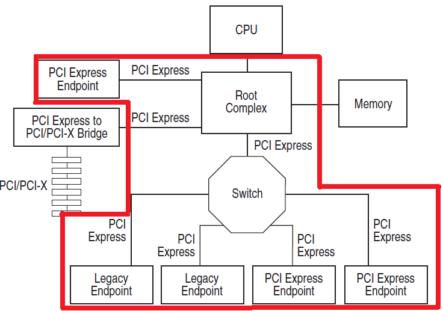

PCIeNetSim?
PCI Express (PCIe) is a high-speed bus standard, which has superiority over the conventional standards in terms of the throughput, scalability, and many other functionalities. Such an improvement of PCIe makes it a promising alternative of the host interfaces or the inter-connections for emerging high-performance storage systems. To help system (storage) designers explore their PCIe-based systems, PCIeNetSim provides a limited simulation framework for PCIe-based networks according to the PCIe specification. Using PCIeNetSim, users can attach their own service-user model (e.g., host system which genernates I/O requests) and service-provider model (e.g., storage system which processes the given I/O requests) at the both ends. The current version of PCIeNetSim provides a simple queue model (which accumulates I/O traces) and a naive flash model (which responds each I/O request) on both sides of the network, as an example.
PCIeNetSim Characteristics?
Right figure (cited from PCI Express Base Specification Revision 3.0) presents a topology example based on PCIe components. PCIeNetSim provides customized PCIe-based networks by modeling the PCIe components and their connections, as described in the red box. Using PCIeNetSim, users can configure their own PCIe-based system by attaching the necessary component models at both ends of the network. To support such scalable and configurable PCIe networks, PCIeNetSim has below characteristics.
-
Separate PCIe Components
PCIe network consists of four major PCIe components: root complex (RC), switch (SW), endpoint (EP), and link. RC generates PCIe packets at the host side, whereas EP processes the packets at the storage side. A set of SWs connects RCs and EPs, while links are laid between any neighboring PCIe components. PCIeNetsim enables users to construct any type of networks by separately modeling each PCIe component. The number of ports and lanes can be user-specified, which realizes a customized PCIe network to comply with the PCIe specification.
-
Scalable Link Performance
Between any two PCIe components, there should be a PCIe link to connect them. Its data transfer capability is determined by the PCIe version, the number of lanes it employs. Depending on the specification version, the data rate of single-lane link improves by almost double. Also, the data rate can scalably increase as the number of lanes the link includes increases (from one to thirty-two lanes). In addition to such performance scalability, PCIeNetSim provides actual data rates (which are a bit smaller than the specified ones) by considering the encoding overheads. It is noted that the specification defines 8/10b or 128/130b encoding in the physical layer.
-
Configurable Switch Trees
As can be seen in the figure, PCIe network has the form of tree where a SW bridges between RC and EPs. A switch can consist of a upward port (which attaches to RC) and multiple downward ports (which are connected to the corresponding EPs). Even though there is no specified limit in the number of downward ports or EPs, connecting unlimited number of EPs is not a recommended way due to the cost and performance issue. Instead, a layered SW tree can allow more and more EPs to dangle to its corresponding RC. In the SW tree, an upper-layer SW's downward port faces to the upward port of the lower-layer SW, which can increase the number of last-layer SWs' downward ports where EPs can be connected. PCIeNetSim enables users configure their own SW tree depending on the need such as network size and the number of end devices. Furthermore, RC (as described in the figure) can have multiple ports, which is used for an EP, a SW, or a SW tree. To simulate a system with large device (or EP) clusters, PCIeNetSim is designed to connect duplicate (indentically configured) SW trees to each RC's port.
How to Use?
-
Run
With a simple build using the makefile, one can easily generate the executable, named PNS. The command line format to run the simulator is shown below. PCIeNetSim takes a "configuration" file and a "trace" file as its parameters. The formats of the configuration file and the trace file are also described below.
$ ./PNS --conf conf-file-name --trace trace-file-name -
Configuration File
The configuration file defines a user-customized network. The format of the configuration file includes the PCIe components consisting a network. Each component further consists of <"attribute", "value"> pairs. An example shown below starts with the overall system configuration (named [System]) and PCIe components ([RootComplex], [Link], [Switch], and [EndPoint]) follow. For instance, the system configuration requires to specify the number of command queue entries (numQueueEntry), the number of devices be connected (numDevice), the number of SW layers depending on the network size (numSwitchLayer), and so on. On the other hand, the designated network tree consists of a RC and four SWs (each connected to the four ports of the RC). Each SW has two downward ports of which is connected to an EP. By placing a link between any component, the PCIe tree network bridges between the RC and the eight devices. To realize the tree network, each attribute of each component is specified as shown in below.
[System] numQueueEntry 10000 numDevice 8 numSwitchLayer 1 ... [RootComplex] numDownPort 4 numTotalLane 128 [Link] 1 numVer 2 numLink 4 numLane 32 [Switch] 1 numSwitch 4 numPort 3 sizePortBuffer 16777216 timeSwitching 50 ... [Link] 2 ... [EndPoint] numEndPoint 8 sizePortBuffer 4194304 ... -
Trace File
The format of the trace file comprises of three attributes: request type, request address, and request size. An example of <"req-type" "block-address" "req-size"> tuples is shown below. In the current version, "req-type" has to be specified as "Read" or "Write". Also, "block-address" stands for the logical block address, whereas "req-size" is specified using a unit of sector.
Read 7014960 8 Write 1887931904 128 ... -
Simulation Result
After completing the simulation with all the given traces, PCIeNetSim prints out simple statistics. In addition, a file (named output-breakdown) which records the I/O latency breakdown is generated. This describes the service time of each PCIe components during an I/O journey on the network.
Contact?
Please contact us with any questions or comments you may have: Wonil Choi (Penn State), pcienetsim@gmail.com.